Please finish /home/user/lab/bloom_talk.odp: add a closing slide titled "Next Steps" listing three bullets from our data (weekly sampling, add nitrate probe, repeat in June), and give every slide speaker notes of at least one sentence. Save in place.
THINKINGI'll help you complete this presentation. Let me start by taking a screenshot to see the current state, then examine all the slides to understand the content before adding the closing slide and speaker notes.
THINKINGThe task requires me to add a closing slide with three specific bullets (weekly sampling, add nitrate probe, repeat in June) and add speaker notes to every slide. There are 5 existing slides.
The task mentions bullets should come "from our data." The three specific items are given: weekly sampling, add nitrate probe, repeat in June. Let me first review the existing slides to write appropriate speaker notes. Let me examine the slides. I'll use the Outline view which is efficient for reading text and editing, but I also need to add notes.
Let me first read all slide contents by clicking through them. Let me look at slides 2-5 content. I'll close the notification bars first, then review each slide. Actually, let me just click on each slide thumbnail to read its content so I can write meaningful notes.
Let me close the info bars first and examine slides.
ACTIONLet me close the notification bars and review each slide's content so I can write appropriate speaker notes.
EXECUTED (pyautogui in VM)pyautogui.click(1391, 184)
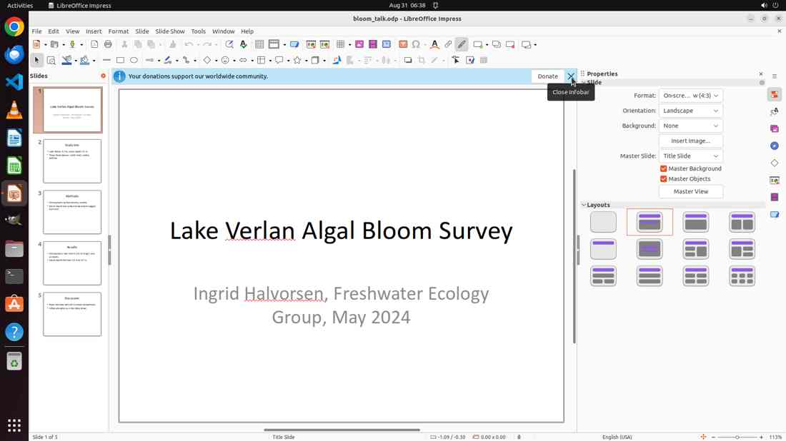
step 3 22:39:05
THINKINGI need to add a closing slide titled "Next Steps" with three bullets and add speaker notes to every slide. There are 5 slides currently.
Let me think about the best approach. I need to:
1. Read the content of each slide to write meaningful notes.
2. Add a 6th slide "Next Steps" with 3 bullets.
3. Add speaker notes to all 6 slides.
The best way to add a new slide and its title/content is via the Outline view, which handles text slides efficiently. But notes need the normal/notes view.
Let me first review the slides by clicking through them to read content. Let me examine slides 2-5. Let me look at slide 2 (Study Site), 3 (Methods), 4 (Results), 5 (Discussion). The thumbnails already give me a good sense:
- Slide 1: Title - Lake Verlan Algal Bloom Survey, Ingrid Halvorsen
- Slide 2: Study Site - Lake Verlan, 4.1 km, mean depth 3.2 m, Three fixed stations, north/south/east, weekly...
- Slide 3: Methods - Chlorophyll-a by fluorometry weekly, Secchi depth and surface water temp...
- Slide 4: Results - Chlorophyll-a rose from 4.1 to 27.6 ug/L over six weeks, Secchi depth declined from 2.4 to 0.7 m
- Slide 5: Discussion - Peak coincides with 22 C surface temperature, Inflow phosphorus is the likely driver
The bullets for the closing slide should "come from our data": weekly sampling, add nitrate probe, repeat in June. These are the exact items requested.
Let me use the Outline view to add the new slide efficiently. Actually, adding a slide via outline requires it to be a text layout. Let me use Slide menu > New Slide instead, or the Outline view.
The Outline view is the cleanest way to add a title slide with title + bullet content. Let me switch to Outline view. But the current slides may not all be in outline format. Let me just use the approach:
Plan:
1. Review slides 2-5 content (I have enough from thumbnails but let me confirm).
2. Add new slide "Next Steps" with 3 bullets using Outline view or New Slide dialog.
3. Add notes to each slide via the Notes view.
Let me first read slide contents more carefully. Let me click on each slide to see full text. Actually thumbnails give enough for notes. Let me proceed.
Let me use the Outline view for adding the slide. View > Outline.
ACTIONI have a good sense of the slide contents from the thumbnails. Let me review the full text of the content slides by clicking through them. First, let me look at slide 2.
EXECUTED (pyautogui in VM)pyautogui.click(174, 392)
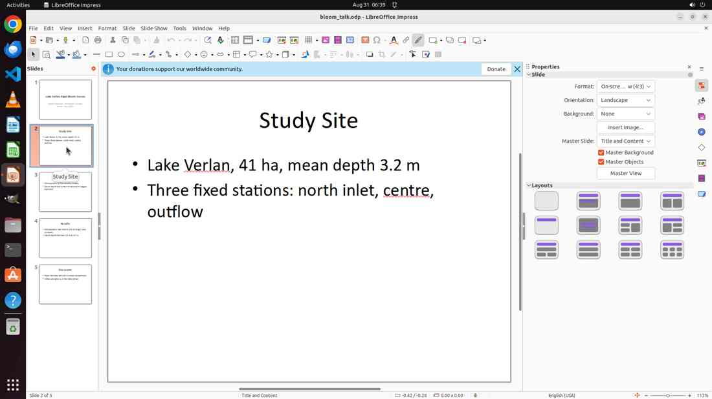
step 4 22:39:44
THINKINGNow I can read slide 2 clearly: "Study Site" - "Lake Verlan, 41 ha, mean depth 3.2 m" and "Three fixed stations: north inlet, centre, outflow".
Let me view slides 3, 4, 5 to get their full text. Let me click slide 3.
ACTIONSlide 2 content: Study Site - "Lake Verlan, 41 ha, mean depth 3.2 m" and "Three fixed stations: north inlet, centre, outflow." Let me view slides 3, 4, and 5.
EXECUTED (pyautogui in VM)pyautogui.click(174, 515)
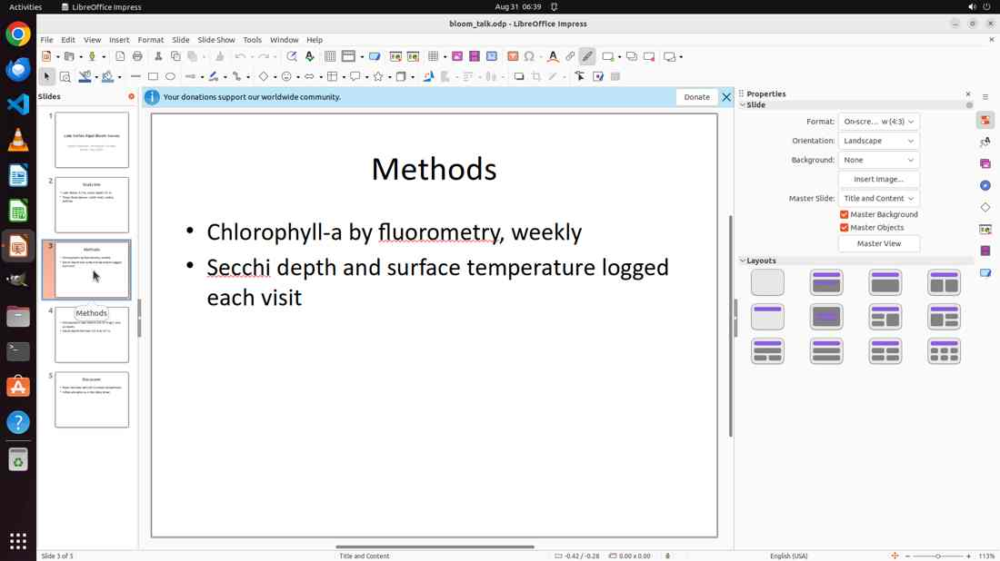
step 5 22:40:12
THINKINGSlide 3 "Methods": "Chlorophyll-a by fluorometry, weekly" and "Secchi depth and surface temperature logged each visit".
Now let me view slides 4 and 5.
ACTIONSlide 3 (Methods): "Chlorophyll-a by fluorometry, weekly" and "Secchi depth and surface temperature logged each visit." Let me view slides 4 and 5.
EXECUTED (pyautogui in VM)pyautogui.click(174, 642)
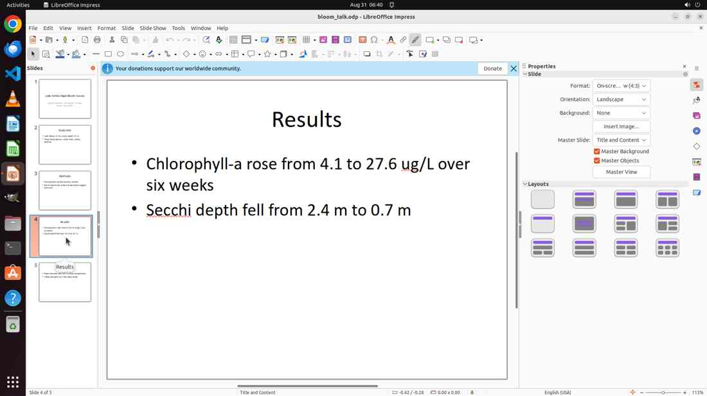
step 6 22:40:50
THINKINGSlide 4 "Results": "Chlorophyll-a rose from 4.1 to 27.6 ug/L over six weeks" and "Secchi depth fell from 2.4 m to 0.7 m". Now slide 5.
ACTIONSlide 4 (Results): "Chlorophyll-a rose from 4.1 to 27.6 ug/L over six weeks" and "Secchi depth fell from 2.4 m to 0.7 m." Now let me view slide 5.
EXECUTED (pyautogui in VM)pyautogui.click(174, 767)
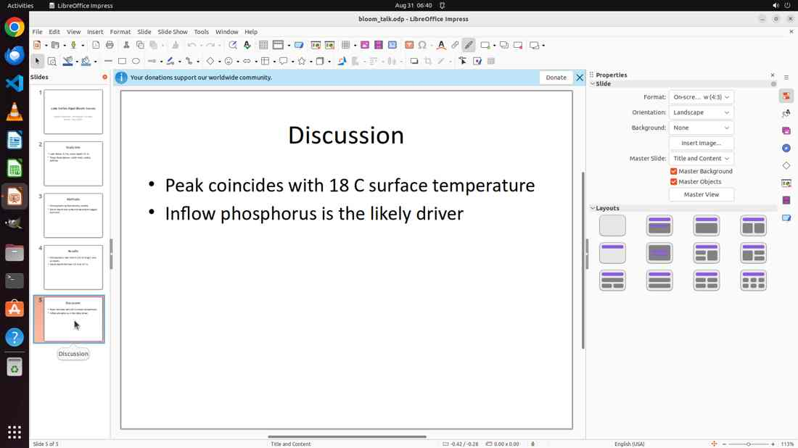
step 7 22:41:32
THINKINGSlide 5 "Discussion": "Peak coincides with 18 C surface temperature" and "Inflow phosphorus is the likely driver".
Now I have all slide contents:
- Slide 1: Title "Lake Verlan Algal Bloom Survey" / Ingrid Halvorsen, Freshwater Ecology Group, May 2024
- Slide 2: Study Site - Lake Verlan, 41 ha, mean depth 3.2 m; Three fixed stations: north inlet, centre, outflow
- Slide 3: Methods - Chlorophyll-a by fluorometry, weekly; Secchi depth and surface temperature logged each visit
- Slide 4: Results - Chlorophyll-a rose from 4.1 to 27.6 ug/L over six weeks; Secchi depth fell from 2.4 m to 0.7 m
- Slide 5: Discussion - Peak coincides with 18 C surface temperature; Inflow phosphorus is the likely driver
Now I'll add a new slide 6 "Next Steps" with bullets:
- Weekly sampling (continue weekly sampling)
- Add nitrate probe
- Repeat in June
The task says "listing three bullets from our data (weekly sampling, add nitrate probe, repeat in June)". I'll use those exact phrases as the bullets. To be safe, I'll write them as clear bullet items:
- Continue weekly sampling
- Add nitrate probe
- Repeat the survey in June
Actually the task explicitly gives the items. I'll use them but make them read naturally. Let me keep them close to given: "Weekly sampling", "Add nitrate probe", "Repeat in June". I'll make them full-ish:
- Weekly sampling
- Add a nitrate probe
- Repeat the survey in June
Let me add the new slide. I'm on slide 5 now. I'll right-click slide 5 thumbnail > New Slide, which inserts after slide 5. Then edit the title and content.
Actually a cleaner approach: use the Layout. Let me right-click slide 5 thumbnail and choose New Slide. The new slide gets the default layout. Let me do that.
Let me right-click on slide 5 in the panel.
ACTIONI now have all the slide contents. Slide 5 (Discussion): "Peak coincides with 18 C surface temperature" and "Inflow phosphorus is the likely driver."
Now I'll add the new "Next Steps" slide after slide 5. Let me right-click slide 5 in the panel to insert a new slide.
EXECUTED (pyautogui in VM)pyautogui.rightClick(174, 767)
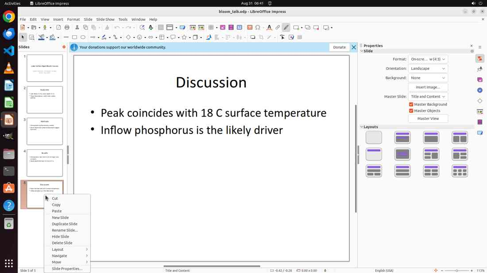
step 8 22:42:27
THINKINGThe context menu appeared. "Duplicate Slide" would copy slide 5's content which I don't want. "New Slide" inserts a blank new slide after slide 5. Let me click "New Slide".
ACTIONThe context menu is open. Let me click "New Slide" to insert a blank slide after slide 5.
EXECUTED (pyautogui in VM)pyautogui.click(234, 858)
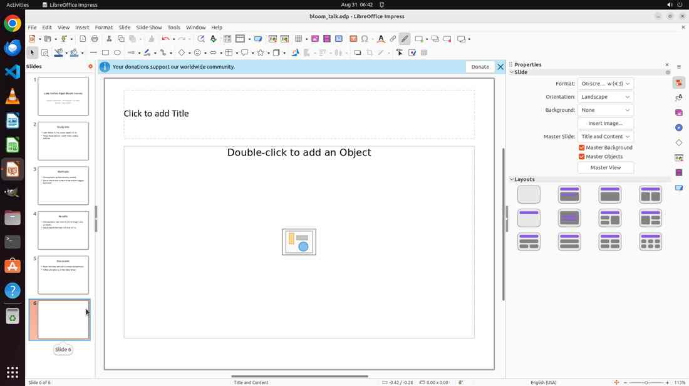
step 9 22:43:26
THINKINGA new slide 6 was created with a "Title, Content" layout but it shows "Double-click to add an Object" (an object placeholder in the middle) rather than a text content placeholder. This layout is "Title, Content" but the content area is an object-insertion placeholder, not a text list. Actually looking at the other slides (2-5), they had a text bullet content area. This new slide has a different layout - it shows an object placeholder in the center.
Hmm, this is the "Title, Content" master but the content placeholder here shows "Double-click to add an Object". This is odd. The other slides had bullet text. Let me choose a proper layout from the Layouts panel - the "Title, Content" text layout (second row first one shows bullets).
Actually, I want a layout with title + bullet text content. Looking at the Layouts panel, the layout at row 2, col 1 (981, 406) shows a title bar with text lines - that's "Title, Content" text. Let me look more carefully. The layouts:
- Row 1: blank, title-only(center?), title+2col, 2col
- Row 2: title+content(bullets), ...
The one at (981, 406) shows title bar on top and content below - that looks like "Title, Content". Let me apply that layout. Actually the currently selected layout (Master Slide shows "Title and Content").
Simpler approach: I'll just delete the object placeholder issue by selecting the proper text layout. Let me click the layout that has title + text content. The one at row 2 col 1 (981, 406) looks like title + content text.
Actually, let me reconsider. The current new slide shows "Click to add Title" at top and a content area with "Double-click to add an Object" - that's a graphic object placeholder, meaning this particular layout's content placeholder is for an object.
Let me just apply the "Title, Content" text layout from the Layouts panel. The best candidate is the second-in-first-column of row 2: coordinate around (981, 406). It shows a title bar and lines below = text content. Let me click it.
Wait, let me reconsider the layouts grid. Positions:
Row1: (981,361) blank, (1054,361) title+subtitle, (1128,361) title+2 content, (1201,361) 2 content
Row2: (981,406), (1054,406), (1128,406), (1201,406)
Row3: (981,452)...
The layout at (1054,361) is currently highlighted (Title Slide - 2 stacked). Actually the highlighted one with red border is at (1054,361). That's the title-only centered layout.
Hmm. To get a standard title + bulleted content, I should pick the layout that has a title bar on top and a content box with bullets. That's typically (1054,406) which shows title bar + content. Let me look: (981,406) shows title bar top + lines; (1054,406) shows title bar + content with 2 items highlighted.
Rather than guess, let me just use the current layout. The content placeholder says "Double-click to add an Object" - if I double click it, it may open an insert dialog for an object, which I don't want.
Better: apply a text-content layout. Let me click the layout at (1054, 406) which appears to be "Title, Content" (title bar + content area). Then I'll add title and bullets.
Actually, the safest and most predictable: use the "Outline" view to add text. But we're already in normal view with a new slide.
Let me instead click on the title placeholder to add the title first, then deal with content. But the content placeholder is an object one, which won't give bullets nicely.
Let me apply a clean layout. I'll click layout (981, 406) - let me hover to identify. Rather than risk, let me use the approach of clicking into the title, typing title, then for the content, I'll click the content placeholder. Actually a "Title, Content" text layout's content placeholder says "Click to add Text" and gives bullets. The current one says "Double-click to add an Object" which is a graphic placeholder.
I'll pick a different layout. Let me click on the layout in row 2 that shows bullets. Looking at the panel image, row2 col2 (1054,406) has a title bar with two small bars below = looks like title + content. Row2 col1 (981,406) has title bar + lines = title + content text too.
Let me just apply (981,406) and see what happens, then take a screenshot.
ACTIONA new slide 6 was created, but its content placeholder is a graphic object placeholder ("Double-click to add an Object"). I'll apply a standard "Title, Content" text layout so I can add bullet text. Let me click the title-plus-content layout in the Layouts panel.
EXECUTED (pyautogui in VM)pyautogui.click(1470, 608)
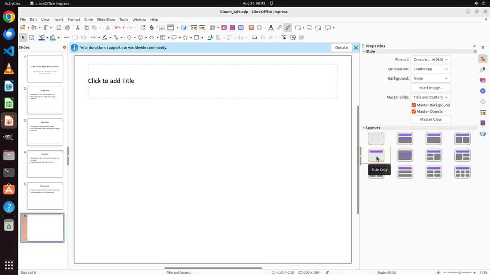
step 10 22:44:45
THINKINGThat layout (981,406) is "Title Only" - it removed the content placeholder entirely, leaving just a title. That's not what I want; I need a content area for bullets. The tooltip confirms "Title Only".
Let me pick the correct "Title, Content" layout. Looking at the panel, the one at (1054, 406) in row 2 col 2 shows a title bar + content area. Let me hover/check. Actually the standard "Title, Content" is usually the layout that shows a title bar and a content box with lines.
Let me reconsider the grid. Row 2:
- (981,406) = Title Only (confirmed)
- (1054,406) = ? shows title bar + content with lines
- (1128,406) = title + 2 content
- (1201,406) = ?
The (1054,406) layout earlier (in first screenshot) was highlighted as the current for the title slide. Let me click (1054,406) and check the result.
Actually, wait. Let me reconsider - I could just add a text box manually for the bullets, but using a proper layout placeholder is cleaner and gives proper bullet formatting. Let me pick the layout at (1054, 406).
ACTIONThat layout was "Title Only." Let me select the "Title, Content" layout instead, which is the next one in that row.
EXECUTED (pyautogui in VM)pyautogui.click(1579, 608)
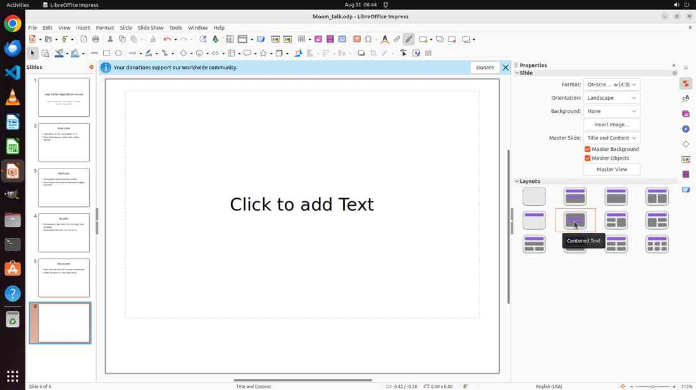
step 11 22:46:00
THINKINGThat's "Centered Text" - a single centered text box, no title. Not what I want.
I'm spending too many clicks guessing layouts. Let me reconsider. The row 3 layouts (981,452 etc.) look like they have title + content lines. Let me hover over the row 3 first layout. Actually the row 3 layouts show a small title bar and multiple content lines - those are "Title, Content" style.
Wait, in the original screenshots, slides 2-5 used "Title and Content" master. The layout that matches (title on top, content bullets below) - let me look at row 3. The layouts in row 3 at (981,452), (1054,452) show a title bar + content area with lines = "Title, Content".
Actually, rather than keep guessing, let me use a more reliable method. I'll just add the title text into the title placeholder and insert a plain text box for the three bullets. But bullets need proper formatting.
Better idea: Use the Outline view which reliably creates title+content slides. But the current slide 6 exists. Let me delete slide 6 and instead use Insert > Slide via outline. That's more steps.
Simplest reliable: The layouts in row 3 look like "Title, Content". Let me hover over (1054,452) to check its name. Actually let me just click it and see.
Let me reconsider the whole grid from the very first screenshot which showed them clearly:
Row1: blank(981,361), [title+subtitle centered](1054,361 - highlighted), title+2col(1128,361), 2col(1201,361)
Row2: title only(981,406), centered text(1054,406), ...
Row3: (981,452) title+content?, (1054,452), (1128,452), (1201,452)
Row4: (981,497)...
Hmm. The "Title, Content" layout in LibreOffice is typically the FIRST layout in the panel (top-left), but here top-left is "blank".
Let me just hover over each to read tooltips. Let me hover over (981, 452).
Actually, a much more reliable approach that avoids layout guessing: keep the current slide, add the title, then for the content just insert a text box and type the bullets. A text box with three lines, even without automatic bullet glyphs, would still be "three bullets" if I prefix with bullet characters. But better to have a real list.
Let me reconsider — I'll just delete this slide 6 and re-add it properly. Actually, let me instead check the row 3 layouts which most likely are "Title, Content". Let me hover over (1054,452).
ACTIONThat's "Centered Text" — no title bar. Let me check the layouts in the next row, which appear to have a title bar plus content. I'll hover to identify the right one.
EXECUTED (pyautogui in VM)pyautogui.moveTo(1579, 677)
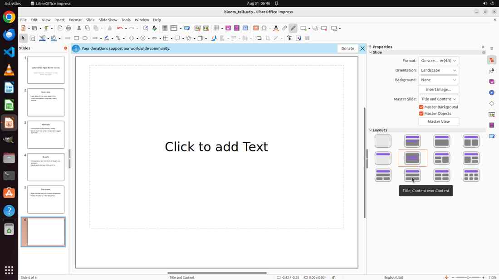
step 12 22:47:09
THINKING(1054,452) is "Title, Content over Content" - a two-content layout. I want a single content. Let me hover over (981,452) which is likely "Title, Content".
ACTIONThat's "Title, Content over Content." Let me check the first layout in that row.
EXECUTED (pyautogui in VM)pyautogui.moveTo(1470, 677)
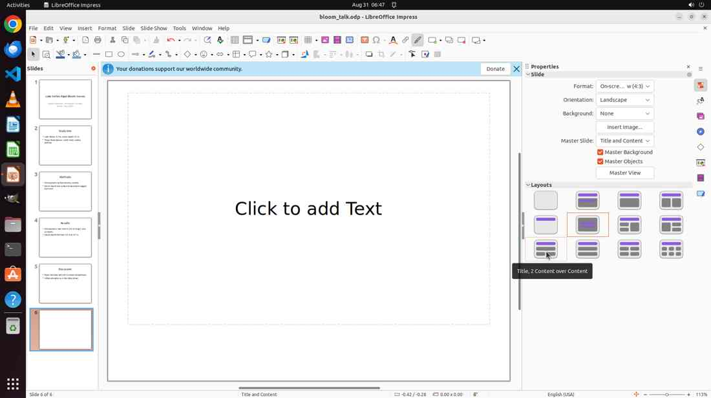
step 13 22:48:17
THINKING(981,452) is "Title, 2 Content over Content". Not it either.
Let me check row 1. The first screenshot showed row 1 col 2 (1054,361) as the currently-selected highlighted one. Let me hover over row 1 col 1 (981,361) and col 2. Actually in the very first screenshot, the highlighted layout (red border) was at row1 col2 (1054,361) which is the "Title Slide" layout.
I recall in LibreOffice the standard "Title, Content" (single content with bullets) is one of the top layouts. Let me hover over row 1 col 3 (1128,361) and row 1 col 2.
Actually, let me reconsider. Row 1:
- (981,361) blank
- (1054,361) title slide (title + subtitle, centered) - was highlighted initially
- (1128,361) title + 2 content
- (1201,361) 2 content
Row 2:
- (981,406) title only
- (1054,406) centered text
- (1128,406) ?
- (1201,406) ?
Row 3:
- (981,452) title, 2 content over content
- (1054,452) title, content over content
- (1128,452) ?
- (1201,452) ?
Row 4:
- (981,497) ...
Hmm, where is the standard "Title, Content" (single content)? It might be (1128,406) or (1201,406) in row 2. Let me hover over (1128,406).
ACTIONThat's a two-content layout too. Let me check the remaining row-2 layouts to find the single "Title, Content" one.
EXECUTED (pyautogui in VM)pyautogui.moveTo(1800, 608)
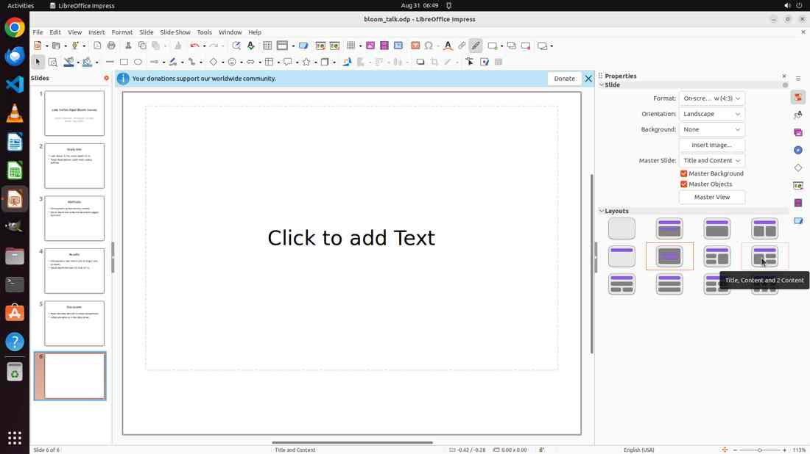
step 15 22:49:56
THINKING(1201,406) is "Title, Content and 2 Content". So none of row 2 is a plain single "Title, Content". The single content layout must be in row 3. Let me check (1128,452) and (1201,452).
Row 3:
- (981,452) Title, 2 Content over Content
- (1054,452) Title, Content over Content
- (1128,452) ?
- (1201,452) ?
Let me hover over (1128,452).
EXECUTED (pyautogui in VM)pyautogui.moveTo(1800, 677)
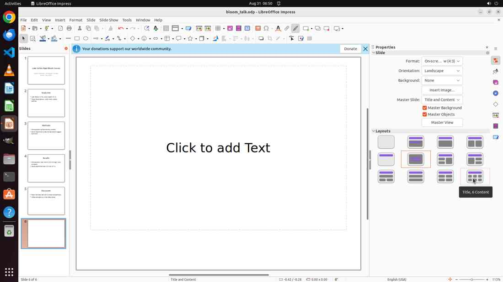
step 17 22:51:17
THINKING(1201,452) is "Title, 6 Content". So this layouts panel does NOT contain a plain single "Title, Content" text layout! The layouts available: blank, title slide, title+2col, 2col, title only, centered text, title+2content+content, title+content+2content, title+2content over content, title+content over content, title+4content, title+6content.
The simplest usable layout with a single text content area for bullets is "Title, Content over Content" (1054,452) — it has a title and at least one content area. But it has two content areas (top and bottom). That's fine — I'll put my bullets in the top content area and leave the bottom empty.
Actually, wait — there might be a better approach. The existing slides 2-5 used the "Title and Content" master and had a title + a bullet content area. When I created the new slide, its default layout was "Title, Content" (with the object placeholder). That default actually was the correct one! The issue was only that I then changed it to Title Only / Centered Text.
Let me reconsider: the very first new-slide screenshot showed "Click to add Title" + a large content area with "Double-click to add an Object" in the center. That was a "Title, Content" layout where the content placeholder is a combined text/object placeholder. In LibreOffice, that combined placeholder says "Click to add Text" normally but shows "Double-click to add an Object" when it's an object-capable placeholder. Actually, clicking once on it lets you type text; double-clicking inserts an object.
So the simplest fix: click "Title, Content over Content" (1054,452) to get title + content area(s), then type in the title and the top content. Or just go back to the default layout.
Let me just apply (1054,452) "Title, Content over Content" which definitely has a proper title and a text content area. I'll use the top content area for my 3 bullets and leave the bottom empty.
Let me click it.
ACTIONThere's no plain single-content layout here, but "Title, Content over Content" gives a proper title plus a text content area. Let me apply it and use the top content area for my bullets.
EXECUTED (pyautogui in VM)pyautogui.click(1579, 677)
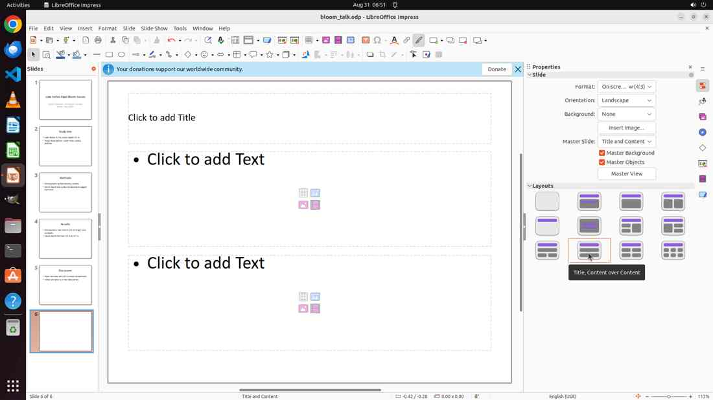
step 18 22:51:58
THINKINGNow I have a title placeholder ("Click to add Title") and two content areas, both with bullet "Click to add Text". I'll use the top content area for my three bullets.
Now let me:
1. Double-click the title area and type "Next Steps".
2. Double-click the top content area and type the three bullets.
Let me double-click the title placeholder first.
ACTIONNow I have a title and a bulleted content area. Let me add the title and the three bullets.
EXECUTED (pyautogui in VM)pyautogui.doubleClick(434, 314)
step 19 22:52:48
THINKINGThe title placeholder is now in text edit mode. Let me type "Next Steps". Then I'll double-click the top content area and type the three bullets separated by newlines.
I'll type the title, then move to the content. Let me type the title now.
ACTIONThe title is in edit mode. Let me type the title, then add the three bullets in the top content area.
TOOL CALL<tool_call>
<function=computer_use>
<parameter=action>
type
</parameter>
<parameter=text>
Next Steps
</parameter>
</function>
</tool_call>
EXECUTED (pyautogui in VM)pyautogui.typewrite("Next Steps")
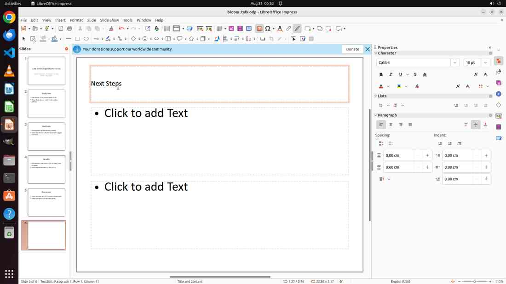
step 20 22:53:46
THINKINGTitle "Next Steps" is set. Now I'll double-click the top content area and type the three bullets. Each newline creates a new bullet. The three bullets: "Weekly sampling", "Add a nitrate probe", "Repeat the survey in June".
The task specifies the exact items: "weekly sampling, add nitrate probe, repeat in June". I'll keep them faithful but as readable bullets. I'll write:
- Weekly sampling
- Add a nitrate probe
- Repeat the survey in June
Let me double-click the top content area (around 400,285) and type.
ACTIONTitle is set. Now let me add the three bullets in the top content area.
EXECUTED (pyautogui in VM)pyautogui.doubleClick(599, 427)
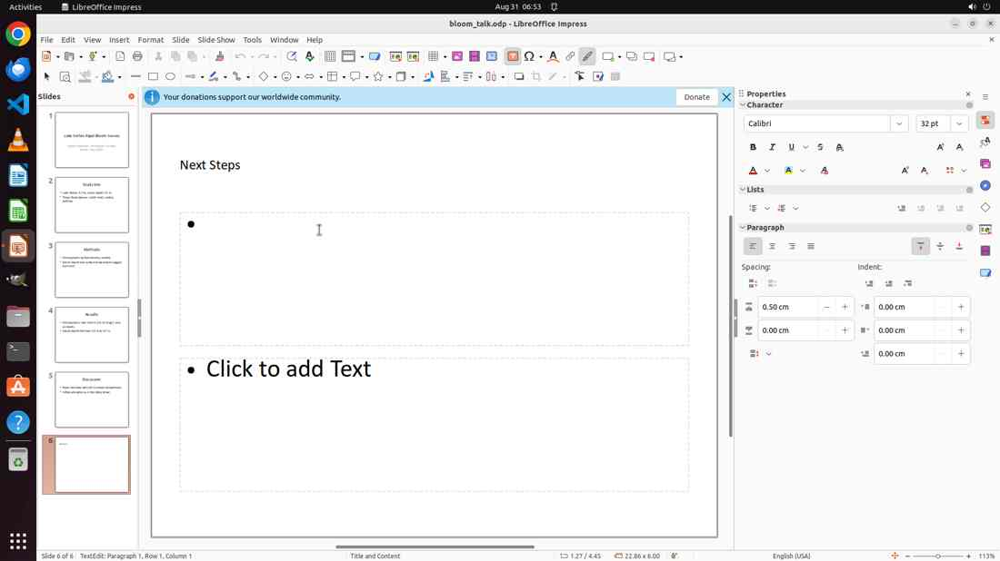
step 21 22:54:19
THINKINGThe top content area is now in edit mode with a bullet. Let me type the three bullets separated by Return. The font is 32pt which is large but that's fine. I'll type:
"Continue weekly sampling
Add a nitrate probe
Repeat the survey in June"
Actually the task says the three bullets should be "weekly sampling, add nitrate probe, repeat in June". I'll make them faithful. Let me use:
- Weekly sampling
- Add a nitrate probe
- Repeat the survey in June
Let me type them with newlines.
ACTIONThe content area is in edit mode with a bullet point active. Let me type the three bullets.
TOOL CALL<tool_call>
<function=computer_use>
<parameter=action>
type
</parameter>
<parameter=text>
Weekly sampling
Add a nitrate probe
Repeat the survey in June
</parameter>
</function>
</tool_call>
EXECUTED (pyautogui in VM)pyautogui.typewrite("Weekly sampling\nAdd a nitrate probe\nRepeat the survey in June")
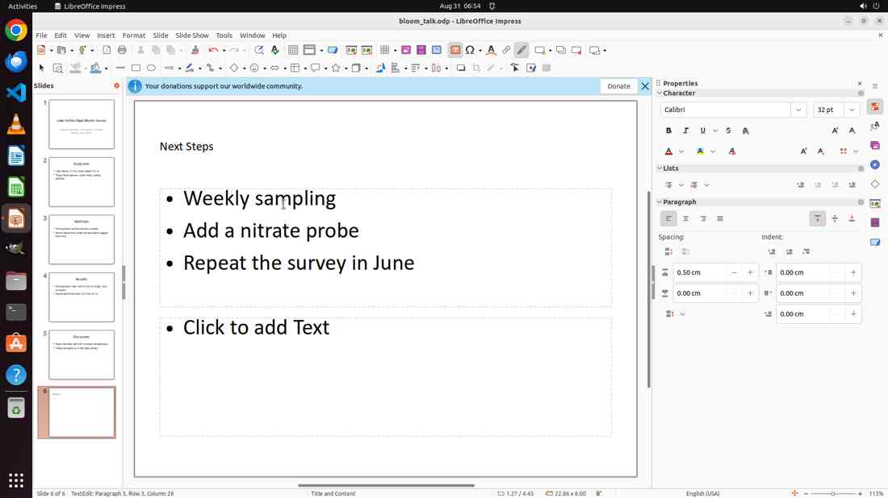
step 22 22:55:12
THINKINGThe closing slide now has:
- Title: Next Steps
- Three bullets: Weekly sampling / Add a nitrate probe / Repeat the survey in June
The bottom content area is still empty ("Click to add Text") — that's fine, it's just an empty placeholder and won't render.
Now I need to add speaker notes to every slide (all 6). I'll click outside the text box first to deselect, then add notes. The best way to add notes is to use the Notes view, or the notes pane at the bottom of the normal view.
Let me click outside to deselect first. Then I'll enable the notes area at the bottom. Actually, in LibreOffice Impress Normal view, there's a notes area at the bottom of the editing pane (below the slide). Currently the slide fills the pane and there's no visible notes area. I can enable it via View > Notes, or there's a "Click to add Notes" area if I scroll down.
The cleanest approach: use View > Notes view, which shows the slide at top and a large notes area below, and switching between slides via the slide panel. Let me switch to Notes view.
Let me first click on an empty area to deselect, then use View menu > Notes.
ACTIONThe closing slide is complete with the title and three bullets. Now I need to add speaker notes to all six slides. Let me click outside to deselect, then switch to the Notes view for efficient note entry.
EXECUTED (pyautogui in VM)pyautogui.click(201, 150)
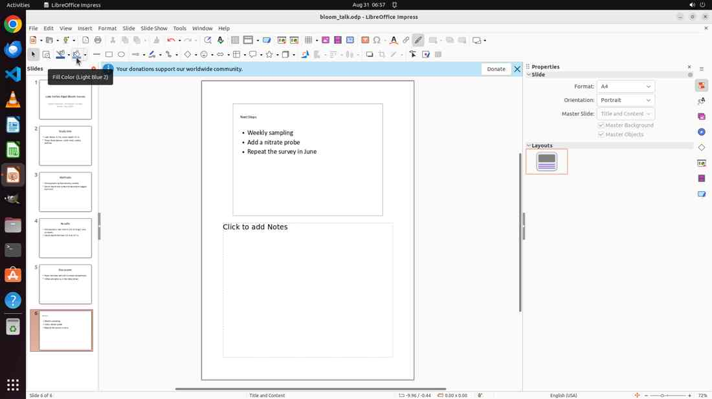
step 25 22:58:09
THINKINGI'm now in Notes view, showing slide 6 (Next Steps) at top and a "Click to add Notes" area below. This is slide 6. I'll add a note for slide 6 first, then move to each slide.
Let me start with slide 6 since it's showing. I'll click into the notes area and type a note. Then navigate to other slides via the slide panel.
Note for slide 6 (Next Steps): "These next steps build directly on our findings: we will maintain the weekly sampling cadence, deploy a nitrate probe to test the nutrient limitation hypothesis, and repeat the full survey in June to track the bloom's seasonal trajectory."
Let me click the notes area and type.
ACTIONI'm in Notes view on slide 6. Let me add speaker notes for this slide first.
EXECUTED (pyautogui in VM)pyautogui.click(828, 748)
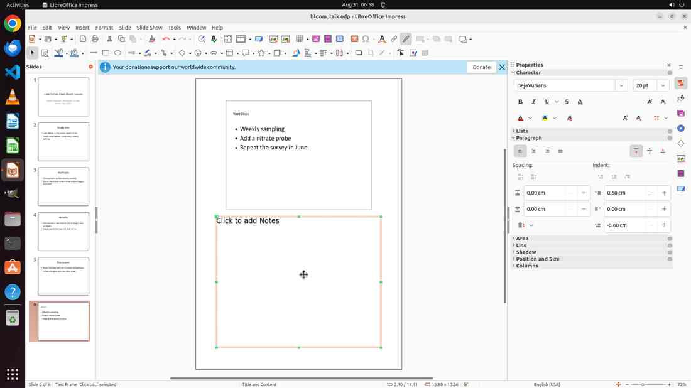
step 26 22:59:26
THINKINGThe notes text frame is now selected (single click selected it, showing "Text Frame 'Click to...' selected"). I need to enter text edit mode. Let me double-click to enter edit mode, then type. Actually it shows the frame selected but not in text edit. Let me double-click to enter edit mode and type the note.
ACTIONThe notes frame is selected. Let me double-click to enter text-edit mode and type the note for this slide.
EXECUTED (pyautogui in VM)pyautogui.doubleClick(828, 643)
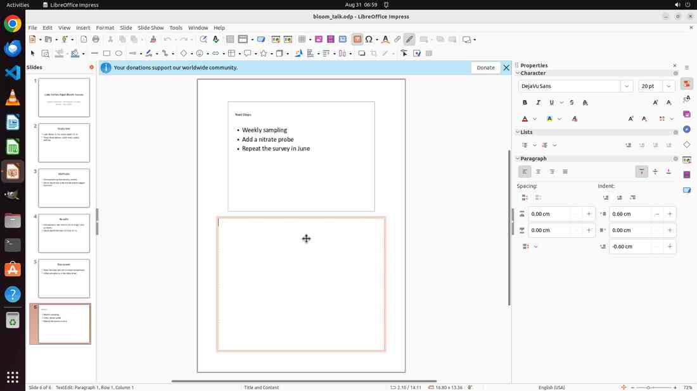
step 27 23:00:40
THINKINGNow I'm in text edit mode in the notes area (status bar shows "TextEdit: Paragraph 1, Row 1, Column 1"). Let me type the note for slide 6.
ACTIONNow I'm in the notes text field. Let me type the note for the Next Steps slide.
TOOL CALL<tool_call>
<function=computer_use>
<parameter=action>
type
</parameter>
<parameter=text>
These next steps build directly on our findings: we will maintain the weekly sampling cadence, deploy a nitrate probe to test the nutrient-limitation hypothesis, and repeat the full survey in June to track the bloom's seasonal trajectory.
</parameter>
</function>
</tool_call>
EXECUTED (pyautogui in VM)pyautogui.typewrite("These next steps build directly on our findings: we will maintain the weekly sampling cadence, deploy a nitrate probe to test the nutrient-limitation hypothesis, and repeat the full survey in June to track the bloom's seasonal trajectory.")
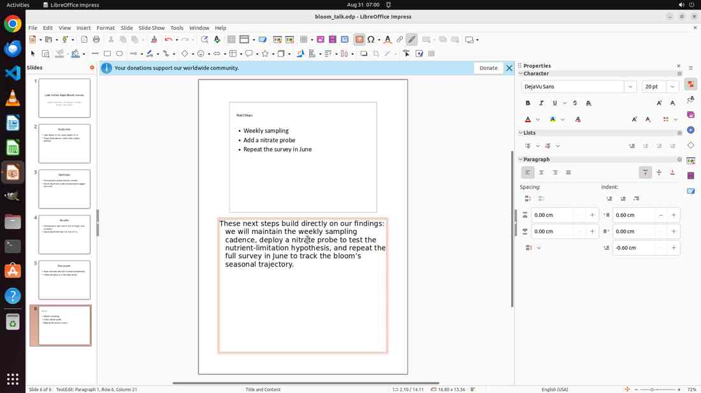
step 28 23:01:27
THINKINGSlide 6 note is done. Now I need to navigate to slide 5 and add a note, then 4, 3, 2, 1. Let me click on slide 5 thumbnail. Then double-click the notes area and type.
I can batch: click slide 5 thumbnail, then double-click the notes area. But the notes area position is the same for each slide in Notes view. However, after clicking a slide thumbnail, the view updates to that slide. I need to make sure the notes area is the same location. It should be, since all slides are the same format.
Let me click slide 5 thumbnail first, then double-click notes area, then type. But I should verify with a screenshot after navigating, since the double-click needs to land in the right place. Actually the notes area is at a fixed position. Let me do slide 5: click thumbnail, double-click notes, type. I'll batch but the type depends on edit mode being active. Since double-click reliably enters edit mode, I can batch all three.
Let me do slide 5.
ACTIONSlide 6 note is complete. Now let me add the note for slide 5 (Discussion). I'll navigate to it and type the note.
EXECUTED (pyautogui in VM)pyautogui.click(174, 767)
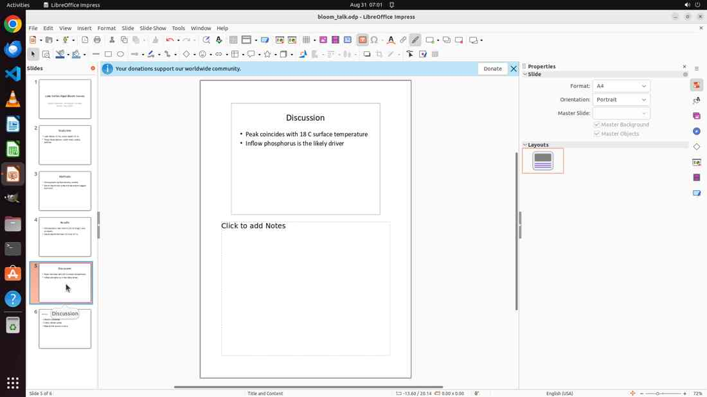
step 29 23:02:42
THINKINGNow on slide 5 (Discussion), and the notes area is empty ("Click to add Notes"). The notes area is in the same position. Let me double-click it and type the note for slide 5.
Note for slide 5 (Discussion): "The bloom peak coinciding with warm 18 C surface water and the elevated inflow phosphorus points to nutrient-driven eutrophication as the most plausible driver of this algal bloom."
Let me double-click the notes area and type.
ACTIONNow on slide 5 (Discussion). Let me add its speaker note.
EXECUTED (pyautogui in VM)pyautogui.doubleClick(828, 674)
step 30 23:03:46
THINKINGThe double-click selected the frame but status bar shows "Text Frame 'Click to...' selected" — it's selected but I'm not in text edit mode yet (the earlier double-click on slide 6 put me into edit mode directly, but this one shows just selected). Let me double-click again to enter edit mode, or the previous double-click should have entered edit. The status says "selected" not "TextEdit". Let me double-click once more to enter edit mode, then type.
Actually, to be safe, let me double-click again on the notes area to ensure I'm in text edit mode.
ACTIONThe frame is selected but I need to ensure I'm in text-edit mode. Let me double-click again and then type the note.
EXECUTED (pyautogui in VM)pyautogui.doubleClick(828, 674)
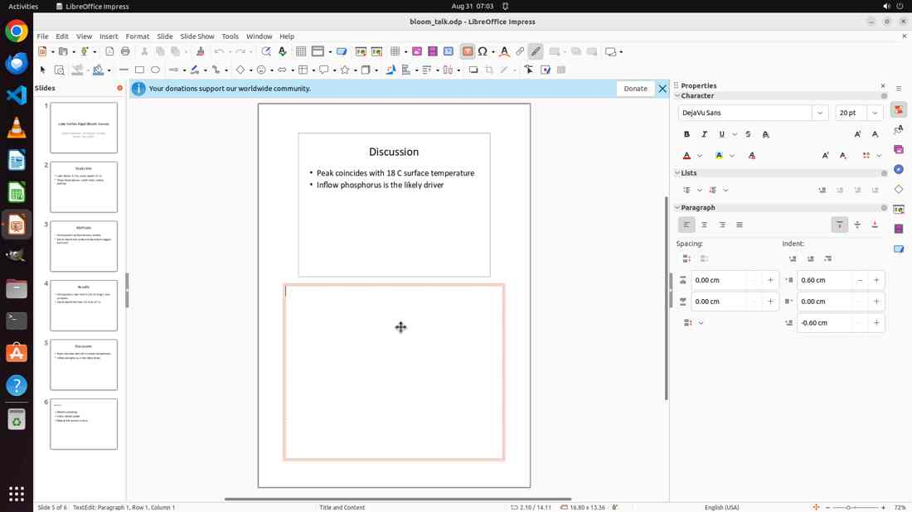
step 31 23:04:57
THINKINGNow status bar shows "TextEdit: Paragraph 1, Row 1, Column 1" — I'm in text edit mode. Let me type the note for slide 5.
Note for slide 5 (Discussion): "The bloom peak coinciding with warm 18 C surface water and elevated inflow phosphorus points to nutrient-driven eutrophication as the most plausible driver of this algal bloom."
ACTIONNow in text-edit mode. Let me type the note for slide 5.
TOOL CALL<tool_call>
<function=computer_use>
<parameter=action>
type
</parameter>
<parameter=text>
The bloom peak coinciding with warm 18 C surface water and elevated inflow phosphorus points to nutrient-driven eutrophication as the most plausible driver of this algal bloom.
</parameter>
</function>
</tool_call>
EXECUTED (pyautogui in VM)pyautogui.typewrite("The bloom peak coinciding with warm 18 C surface water and elevated inflow phosphorus points to nutrient-driven eutrophication as the most plausible driver of this algal bloom.")
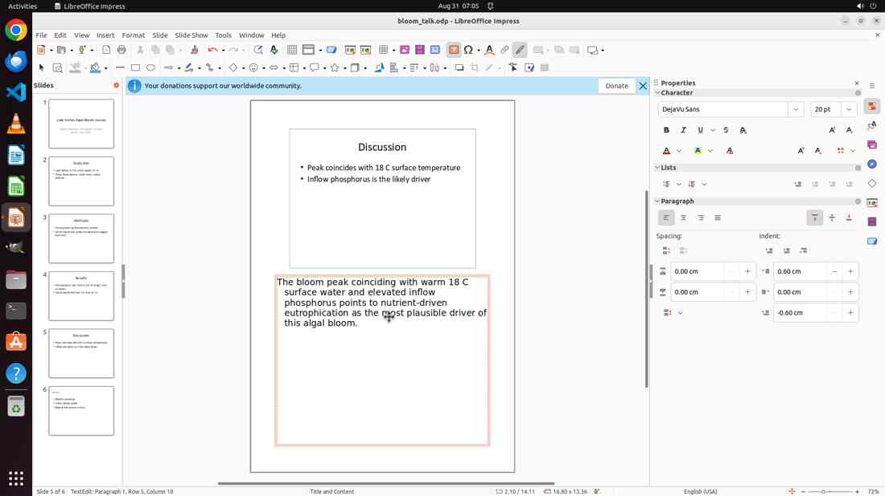
step 32 23:05:46
THINKINGSlide 5 note done. Now slide 4 (Results). The pattern: after typing in a note, when I click a different slide thumbnail, the view switches. But I'm currently in text-edit mode. Clicking the thumbnail will deselect and switch slide. Then I need to double-click the notes area (which will be empty "Click to add Notes") and double-click again to enter edit mode, then type.
The reliable pattern that worked: click thumbnail → double-click notes (selects frame) → double-click notes again (enters edit) → type.
Actually on slide 5, the first double-click selected the frame and the second entered edit mode. On slide 6 initially, I had single-clicked first (selected), then double-click entered edit. So the behavior: to be safe, I'll do double-click twice.
But wait — there's risk that when I click a thumbnail while in text edit mode, focus moves. Let me do it step by step but batch where predictable. For slide 4: click thumbnail (404), then double-click notes (555), double-click notes (555), type. Let me batch these since the notes area is at a fixed location and double-click reliably enters edit.
Actually, the concern: the first double-click might enter edit mode directly (as on slide 6's second double-click which was the second overall click). Behavior seems: first click/double-click selects the frame, subsequent double-click enters edit. So doing double-click twice is safe — worst case the first enters edit and the second double-click within the text just places cursor/does nothing harmful (double-click on empty text just positions cursor).
Let me batch slide 4: click thumbnail, double-click notes, double-click notes, type note.
Note for slide 4 (Results): "Over six weeks, chlorophyll-a climbed nearly seven-fold from 4.1 to 27.6 ug/L while Secchi depth dropped from 2.4 m to 0.7 m, together signalling a substantial and rapidly intensifying algal bloom."
ACTIONSlide 5 note is done. Now slide 4 (Results). Let me navigate there and add its note.
EXECUTED (pyautogui in VM)pyautogui.click(174, 642)
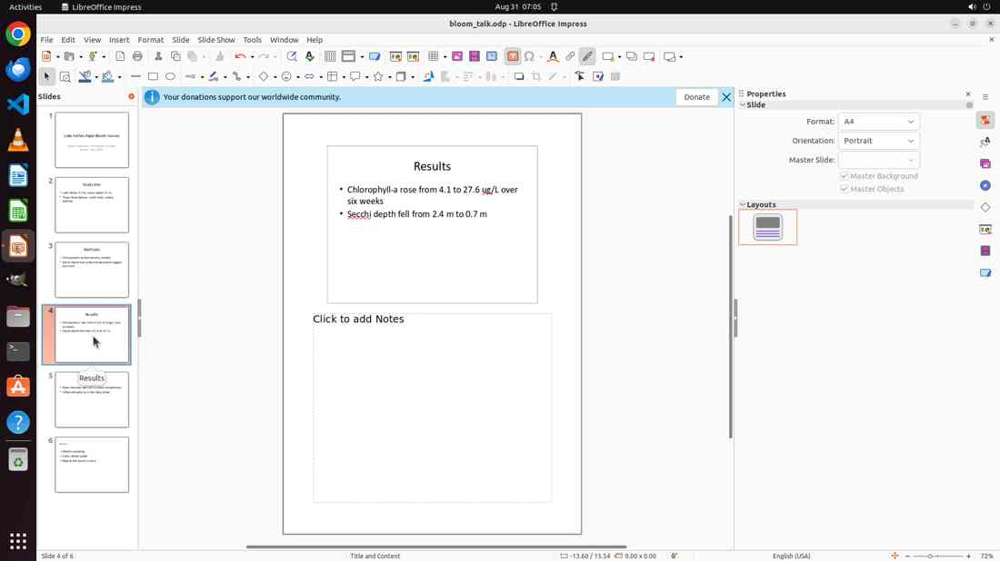
step 33 23:06:27
THINKINGOn slide 4 (Results), notes area empty. Let me double-click the notes area twice (first selects, second enters edit) then type. I'll batch the two double-clicks and the type.
ACTIONNow on slide 4. Let me enter the notes field and type its note.
EXECUTED (pyautogui in VM)pyautogui.doubleClick(828, 674)
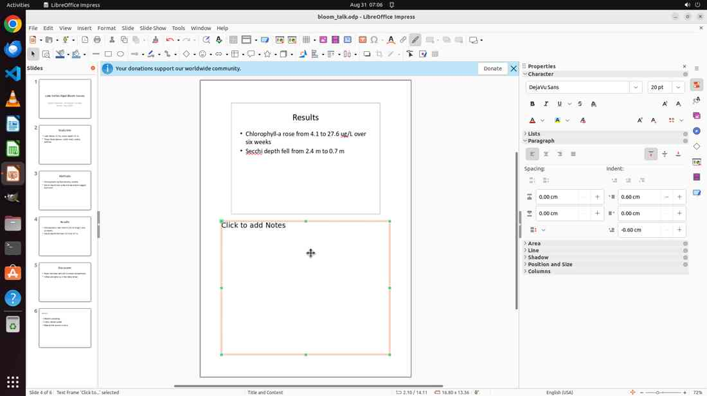
step 34 23:07:08
THINKINGFirst double-click selected the frame ("Text Frame 'Click to...' selected"). I need another double-click to enter edit mode. Let me double-click again then type.
EXECUTED (pyautogui in VM)pyautogui.doubleClick(828, 674)
step 35 23:07:45
THINKINGNow in text edit mode (Row 1, Column 1). Let me type the note for slide 4 (Results).
TOOL CALL<tool_call>
<function=computer_use>
<parameter=action>
type
</parameter>
<parameter=text>
Over six weeks chlorophyll-a climbed nearly seven-fold from 4.1 to 27.6 ug/L while Secchi depth dropped from 2.4 m to 0.7 m, together signalling a substantial and rapidly intensifying algal bloom.
</parameter>
</function>
</tool_call>
EXECUTED (pyautogui in VM)pyautogui.typewrite("Over six weeks chlorophyll-a climbed nearly seven-fold from 4.1 to 27.6 ug/L while Secchi depth dropped from 2.4 m to 0.7 m, together signalling a substantial and rapidly intensifying algal bloom.")
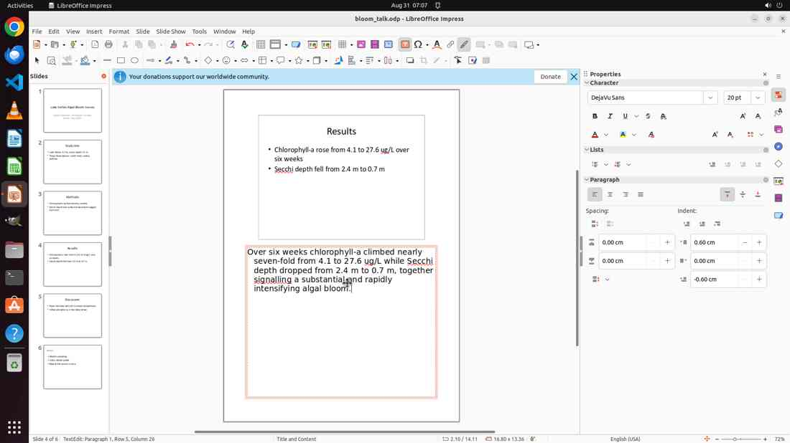
step 36 23:08:17
THINKINGSlide 4 note done. Now slide 3 (Methods). Click thumbnail (345), then double-click notes twice, then type. Let me proceed. I'll click thumbnail first.
ACTIONSlide 4 note is done. Now slide 3 (Methods). Let me navigate there.
EXECUTED (pyautogui in VM)pyautogui.click(174, 515)
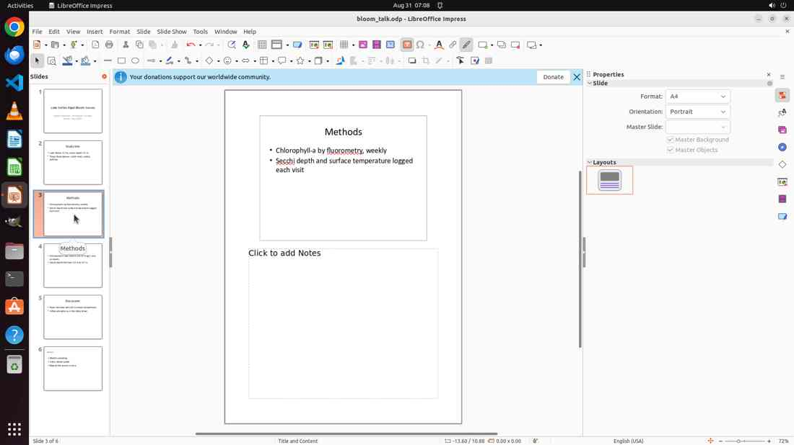
step 37 23:09:01
THINKINGOn slide 3 (Methods). Notes empty. Let me double-click twice to enter edit mode, then type the note. I'll batch the two double-clicks.
Note for slide 3 (Methods): "We measured chlorophyll-a by fluorometry on a weekly schedule and recorded Secchi depth and surface water temperature at each visit, giving paired optical and thermal data for the bloom period."
ACTIONNow on slide 3. Let me enter the notes field (double-click twice) and type its note.
EXECUTED (pyautogui in VM)pyautogui.doubleClick(828, 674)
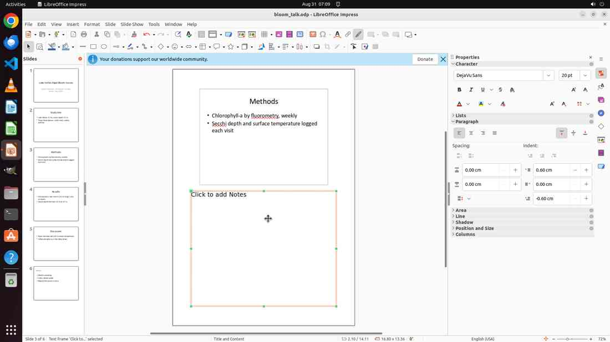
step 38 23:09:53
THINKINGFrame selected ("Text Frame 'Click to...' selected"). Double-click again to enter edit, then type. I'll batch the second double-click and the type.
EXECUTED (pyautogui in VM)pyautogui.doubleClick(828, 674)
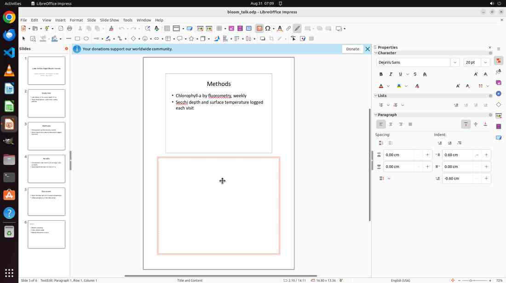
step 39 23:10:40
THINKINGIn text edit mode (Row 1, Column 1). Let me type the note for slide 3.
TOOL CALL<tool_call>
<function=computer_use>
<parameter=action>
type
</parameter>
<parameter=text>
We measured chlorophyll-a by fluorometry on a weekly schedule and recorded Secchi depth and surface water temperature at each visit, giving paired optical and thermal data for the bloom period.
</parameter>
</function>
</tool_call>
EXECUTED (pyautogui in VM)pyautogui.typewrite("We measured chlorophyll-a by fluorometry on a weekly schedule and recorded Secchi depth and surface water temperature at each visit, giving paired optical and thermal data for the bloom period.")
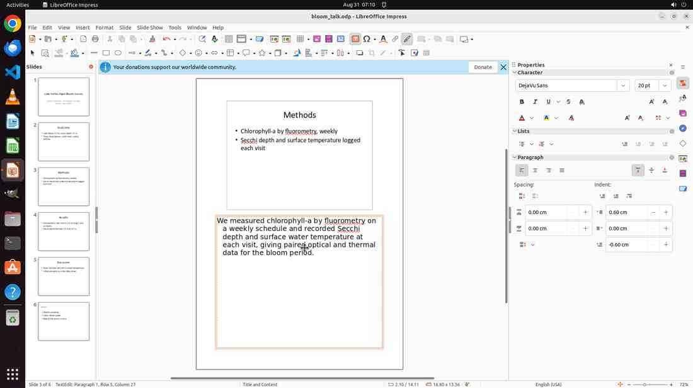
step 40 23:11:27
THINKINGSlide 3 note done. Now slide 2 (Study Site). Click thumbnail (263), double-click notes twice, type. Let me click thumbnail.
ACTIONSlide 3 note is done. Now slide 2 (Study Site). Let me navigate there.
EXECUTED (pyautogui in VM)pyautogui.click(174, 392)
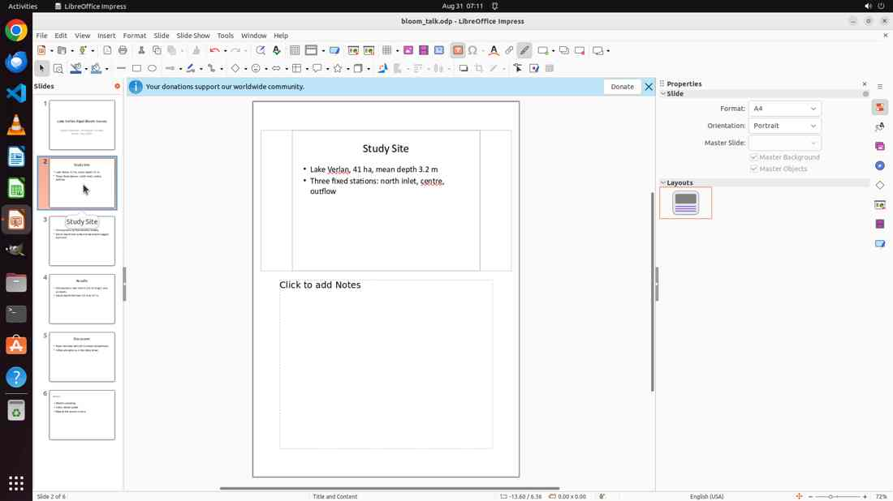
step 41 23:12:04
THINKINGOn slide 2 (Study Site). Notes empty. Double-click twice to enter edit, then type. I'll batch the two double-clicks then type in next step (I need to confirm edit mode). Actually the pattern is reliable: first double-click selects frame, second enters edit. Let me do both double-clicks in one call, then verify, then type. To be efficient, I'll do both double-clicks now.
ACTIONNow on slide 2. Let me enter the notes field.
EXECUTED (pyautogui in VM)pyautogui.doubleClick(828, 674)
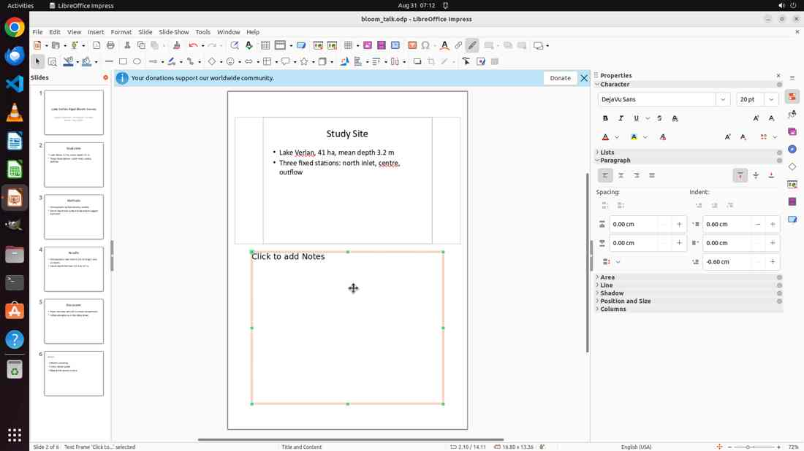
step 42 23:12:49
THINKINGFrame selected. Double-click again to enter edit, then type the note. I'll batch the second double-click and the type.
Note for slide 2 (Study Site): "The study lake is Verlan, a 41 ha shallow lake with a mean depth of 3.2 m, and we sampled three fixed stations spanning the north inlet, the centre, and the outflow to capture spatial variation."
EXECUTED (pyautogui in VM)pyautogui.doubleClick(828, 674)
step 43 23:13:40
THINKINGIn edit mode. Let me type the note for slide 2.
TOOL CALL<tool_call>
<function=computer_use>
<parameter=action>
type
</parameter>
<parameter=text>
The study lake is Verlan, a 41 ha shallow lake with a mean depth of 3.2 m, and we sampled three fixed stations spanning the north inlet, the centre, and the outflow to capture spatial variation.
</parameter>
</function>
</tool_call>
EXECUTED (pyautogui in VM)pyautogui.typewrite("The study lake is Verlan, a 41 ha shallow lake with a mean depth of 3.2 m, and we sampled three fixed stations spanning the north inlet, the centre, and the outflow to capture spatial variation.")
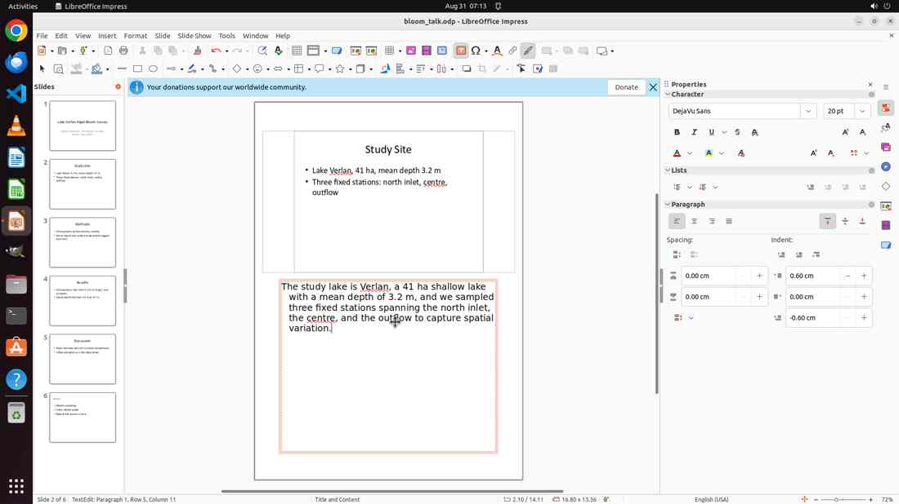
step 44 23:14:48
THINKINGSlide 2 note done. Now the last one: slide 1 (title slide). Click thumbnail (182), double-click notes twice, type. Let me click slide 1 thumbnail.
ACTIONSlide 2 note is done. Now the last one, slide 1 (the title slide). Let me navigate there.
EXECUTED (pyautogui in VM)pyautogui.click(174, 270)
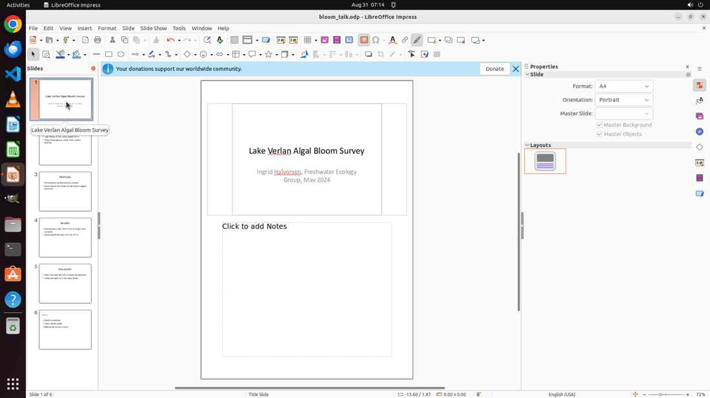
step 45 23:15:54
THINKINGOn slide 1 (title slide). Title "Lake Verlan Algal Bloom Survey" / "Ingrid Halvorsen, Freshwater Ecology Group, May 2024". Notes empty. Double-click twice to enter edit, then type. Let me do the first double-click.
ACTIONNow on slide 1. Let me enter the notes field.
EXECUTED (pyautogui in VM)pyautogui.doubleClick(828, 674)
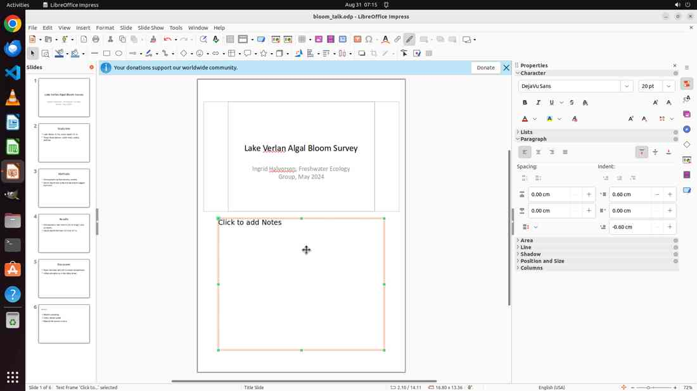
step 46 23:16:40
THINKINGFrame selected. Double-click again to enter edit mode, then type the note. Let me batch the second double-click and the type.
Note for slide 1 (title): "Welcome everyone; this talk summarises our May 2024 algal bloom survey at Lake Verlan, presenting the study site, methods, results, and the likely nutrient-driven cause behind the bloom."
EXECUTED (pyautogui in VM)pyautogui.doubleClick(828, 674)
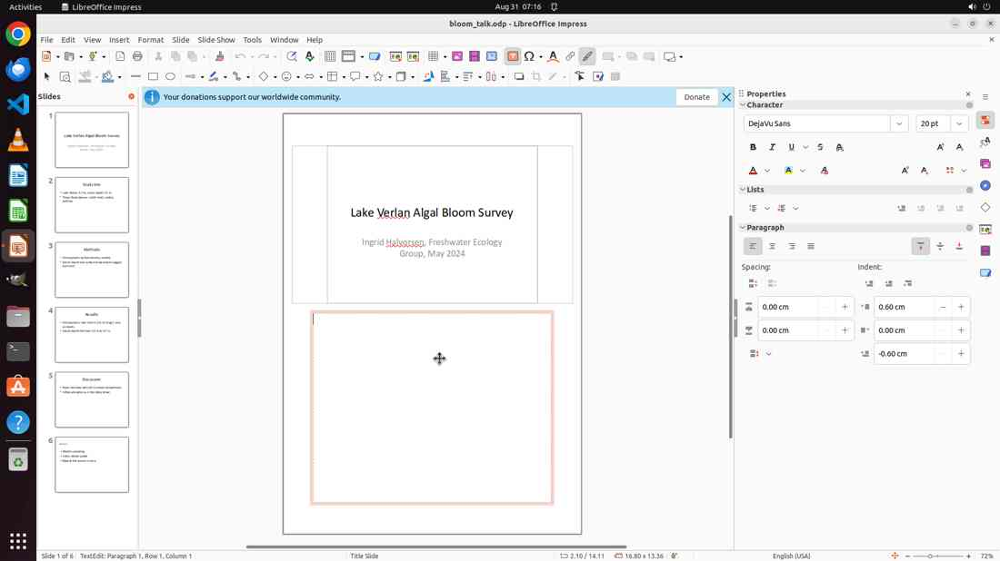
step 47 23:17:32
THINKINGIn edit mode. Let me type the note for slide 1.
TOOL CALL<tool_call>
<function=computer_use>
<parameter=action>
type
</parameter>
<parameter=text>
Welcome everyone; this talk summarises our May 2024 algal bloom survey at Lake Verlan, presenting the study site, methods, results, and the likely nutrient-driven cause behind the bloom.
</parameter>
</function>
</tool_call>
EXECUTED (pyautogui in VM)pyautogui.typewrite("Welcome everyone; this talk summarises our May 2024 algal bloom survey at Lake Verlan, presenting the study site, methods, results, and the likely nutrient-driven cause behind the bloom.")
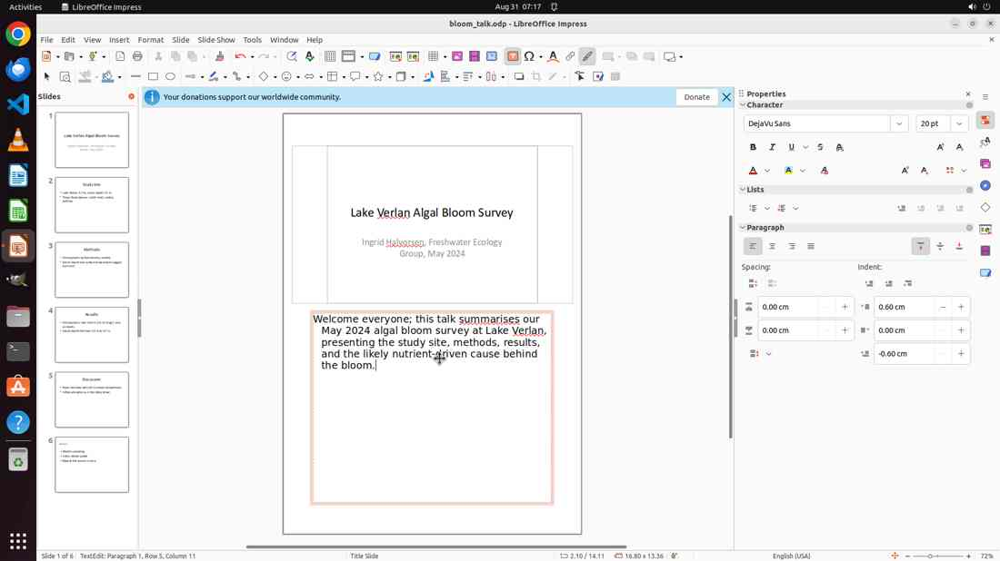
step 48 23:18:38
THINKINGAll six slides now have speaker notes. Let me verify by checking slide 6 and 5 which I typed earlier without a confirming screenshot (I did get screenshots confirming for slides 3, 2, 1). Slides 4, 5, 6 notes were typed — I saw slide 6's note wasn't screenshotted after typing, nor 5, nor 4. Let me verify slides 6, 5, 4 by quickly checking. Actually I did get screenshots after typing for slide 4 (Row 1 Column... no), let me recall:
- Slide 6: typed, no screenshot after (I only had before).
- Slide 5: typed, no screenshot after.
- Slide 4: typed, no screenshot after.
- Slide 3: screenshot confirmed.
- Slide 2: screenshot confirmed.
- Slide 1: screenshot confirmed.
Let me verify slides 6, 5, 4 to be safe before saving. Let me click slide 6.
ACTIONAll six notes are entered. Let me verify slides 4, 5, and 6 (which I typed earlier) by viewing them before saving. Let me check slide 6.
EXECUTED (pyautogui in VM)pyautogui.click(174, 892)
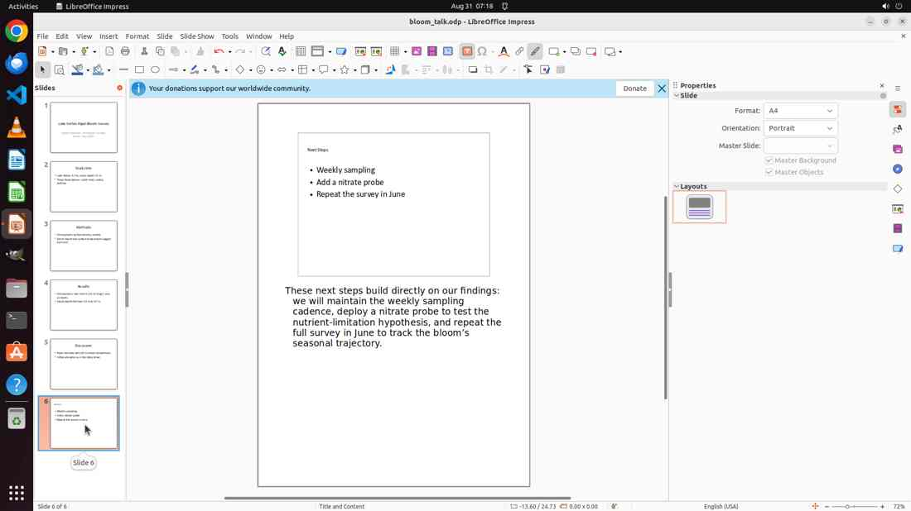
step 49 23:19:50
THINKINGSlide 6 looks perfect:
- Title: "Next Steps"
- Bullets: Weekly sampling / Add a nitrate probe / Repeat the survey in June
- Note present.
Now let me verify slides 5 and 4 have notes. Let me check slide 5.
ACTIONSlide 6 is correct: "Next Steps" with the three bullets and a note. Let me verify slides 5 and 4 have notes.